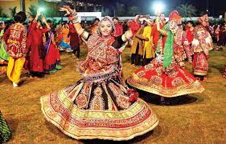

History of Himachalpradesh
Himachal Pradesh, state of India, in the extreme northern part of the Asian subcontinent. It is bounded by Jammu and Kashmir union territory to the northwest and Ladakh union territory to the northeast, by the Tibet Autonomous Region of China to the east, and by the states of Uttarakhand to the southeast, Haryana to the south, and Punjab to the west
Himachal Pradesh occupies a region of scenic splendour in the western Himalayas, offering a multitextured display of lofty snow-clad mountains, deep gorges, thickly forested valleys, large lakes, terraced fields, and cascading streams.
the name of the state is a reference to its setting: Himachal means “snowy slopes” (Sanskrit: hima, “snow”; acal, “slopes”), and Pradesh means “state.”
Mr. Jai Ram Thakur
Chief Minister Of HimchalPradesh
CULTURES
The fairs and festivals of the rural communities provide many occasions for song, dance, and the display of colourful garments.

The Kullu valley, known as the valley of the gods, provides the setting for the Dussehra festival held each autumn to celebrate the defeat of the demon king, Ravana, by the prince Rama (as recounted in the ancient Hindu epic the Ramayana).
During the festival, the various temple gods are carried in procession in covered palanquins, accompanied by bands of singers and dancers.

Manali
locted in kullu ,haryana , India
FAMOUS PLACES:
Manali

Kasol

Shimla

Jibhi

Mcleodganj

Spiti Valley

Dalhousie

FESTIVLAS
Festivals in Himachal Pradesh, a multicultural and multi-religious state, provide sufficient spaces for each sect to bloom and prosper.
- Kullu Dussehra
Kullu Dussehra is one of the most significant festivals in Himachal Pradesh celebrated. In Himachal Pradesh, a grand fair is organised every year in the month of October in the Dhalpur Maidan in the Kullu valley.
- Losar
Losar, a religious festival of Himachal Pradesh to celebrate the uniqueness of Tibetan ethnicity in Himachal Pradesh.
- Halda
Celebrated on the auspicious occasion of Magha Purnima, Halda, One of the beautiful festivals in Himachal Pradesh closely resembles Diwali, the festival of lights.
- Sazo Festival
Bringing religious trevor and spiritual ecstasy to the whole valley of Kinnaur is the ancient Sazo festival.
- Doongri Fair
This festival has its root in the epic of Mahabharata. The day is marked as the birthday of Hadimba, Bheem’s wife thus is also known as Hadimba Devi’s fair.